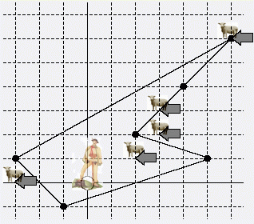

Notice:注册本OJ方式请见https://www.lydsy.com/JudgeOnline/wttl/thread.php?tid=5671
Problem 1474. -- Fsheep1474: Fsheep
Time Limit: 10 Sec Memory Limit: 64 MB
Submit: 10 Solved: 1
[Submit][Status][Discuss]Description
给定一个羊圈，其为星形多边形，让你判断一些点(其实就是羊)是否位于多边形内。
Input
第一行给出N,M表示羊圈羊圈点的个数及羊的数目
接下来N行，每行两个数x,y描述羊圈的顶点，顶点是按顺时针方向输入的.
接下来M行，每行两个数x,y描述羊的位置
Output
输出有m行，对于每只羊如果在羊圈内输出Good sheep,否则输出Bad sheep
Sample Input
6 5
2 2
4 4
6 6
-3 1
-1 -1
5 1
2 1
3 2
6 6
3 3
-3 0

Sample Output
Good sheep
Bad sheep
Good sheep
Good sheep
Bad sheep
HINT
Source
[Submit][Status][Discuss]
HOME
Back